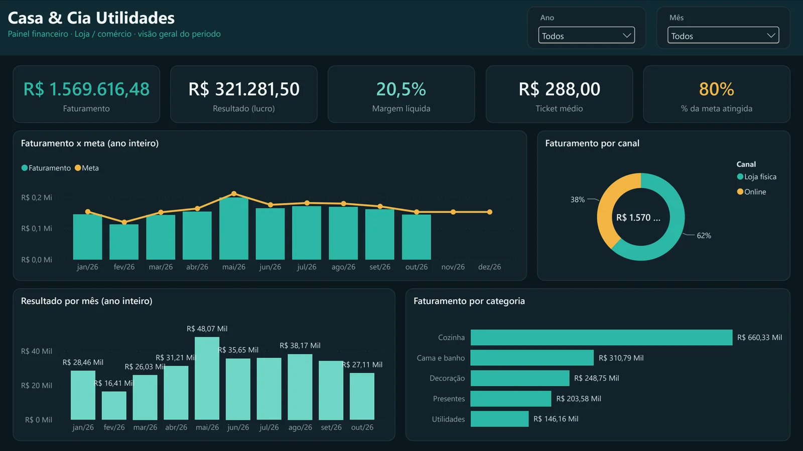
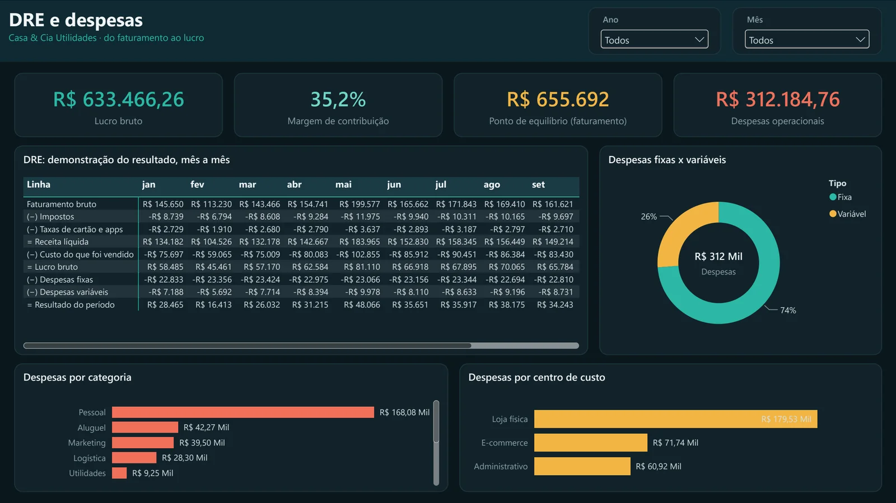
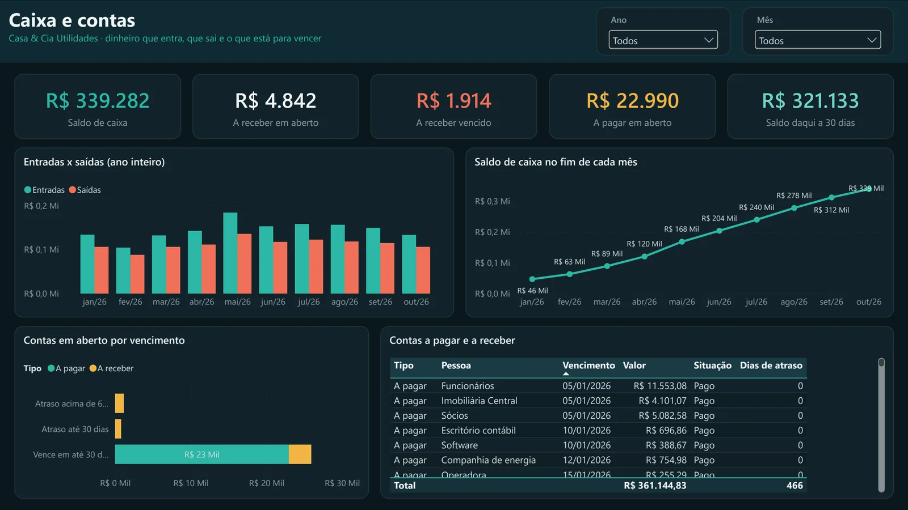

Power BI em formato de projeto (PBIP)
Um script em Node.js escreve o modelo de dados (tabelas, calendário, relacionamentos e mais de 40 medidas DAX) e as páginas do relatório em arquivos de texto. Uma correção feita uma vez chega às quatro versões.
Quatro painéis de Power BI para pequenos negócios (loja, prestação de serviços, restaurante e uma versão genérica), alimentados por uma planilha do Excel e gerados pelo mesmo código.

Muito pequeno negócio sabe quanto vendeu no mês, mas não quanto sobrou: imposto, taxa de cartão, custo do que foi vendido e despesa fixa vão saindo aos poucos, cada um num lugar. Quanto precisa vender para empatar e quanto vai ter no caixa daqui a 30 dias costumam ser chute.
O Power BI Desktop é gratuito e responde essas perguntas, mas montar um modelo do zero exige saber DAX e modelagem. A ideia foi entregar o painel pronto: a pessoa preenche uma planilha do Excel, clica em Atualizar e vê as contas da empresa.
As contas são as mesmas em todo negócio, mas cada um fala de um jeito. Uma configuração por segmento troca os nomes, as colunas da planilha, a cor e a segunda página do relatório.
| Versão | Empresa de exemplo | O que muda |
|---|---|---|
| Loja | Casa & Cia Utilidades | Vendas por produto, vendedor e canal (loja física x online), itens por pedido |
| Serviços | Pixel & Co Agência | Receitas por serviço, responsável e tipo de contrato, horas trabalhadas |
| Restaurante | Bistrô Sabor da Casa | Vendas por prato, canal (salão, balcão, iFood, delivery) e turno, pessoas atendidas |
| Genérica | Empresa Modelo Ltda | Receitas por item, unidade (matriz, filial, online) e canal |
Fazer quatro relatórios à mão e mantê-los iguais seria o caminho certo para eles se desencontrarem. Por isso, tudo é gerado.
Um script em Node.js escreve o modelo de dados (tabelas, calendário, relacionamentos e mais de 40 medidas DAX) e as páginas do relatório em arquivos de texto. Uma correção feita uma vez chega às quatro versões.
Cada arquivo do relatório é conferido contra os esquemas oficiais extraídos do próprio Power BI Desktop. Um campo errado aparece como erro no terminal, em vez de um relatório que não abre.
O Power Query lê o Excel por um parâmetro com o caminho do arquivo. Quem usa só mexe na planilha, que é montada em Python com abas de vendas, despesas, contas e metas.
Gerados com semente fixa, de janeiro a outubro de 2026: sazonalidade, contratos que entram e saem, repasses semanais de aplicativo de entrega e clientes que pagam atrasado. Saem iguais toda vez, o que facilita conferir os números.


Gráfico bonito é a parte fácil. O que dá valor ao painel é escolher as perguntas certas e calcular cada número do jeito que o dono do negócio entende, como o lucro depois da taxa do cartão e não só o faturamento.
Também aprendi a tratar relatório como código: gerado, versionado e validado. Foi isso que permitiu manter quatro versões coerentes, corrigir um cálculo uma vez só e refazer todos os prints do guia sem abrir cada tela.
As empresas e os números são fictícios.